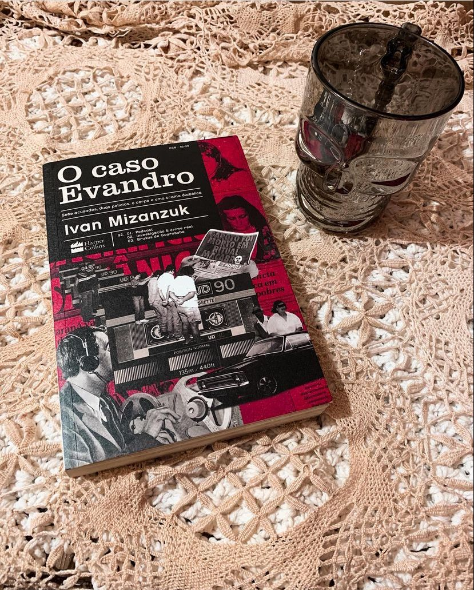

O Caso Evando
(Ivan Mizanzuk - @harpercollinsbrasil )
⭐⭐⭐⭐⭐
⚠️Gatilhos: Violência contra criança, Tortura e Assassinato
Sete acusados, duas polícias, o corpo e uma trama diabólica.
No dia 6 de abril de 1992, Evandro Ramos Caetano desaparece na cidade de Guaratuba. Seu corpo foi encontrado sem vida, em um estado que nem me cabe descrever aqui (⚠️) poucos dias depois. Após três meses de investigação sete pessoas incluindo a esposa e a filha do prefeito da cidade ― foram presas e confessaram o crime. Mas, nem tudo é o que parece! No caso que ficou conhecido como “As bruxas de Guaratuba” as confissões podem ter sido obtidos através de tortura.
O livro “O caso Evandro” foi um dos que mais aguardei lançamento e posso adiantar que valeu a pena!
Ivan Mizanzuk conhece muito bem o caso, e vai trazer depoimentos, detalhes do crime tudo de forma clara e de fácil entendimento.
A história é forte, revoltante e você precisa ter estômago para ler. Mas, se você gosta de True Crime com toda certeza vai se interessar pela obra e querer conhecer esse crime brutal da história brasileira.
Conheci o caso através de vídeos na internet e foi assim que descobri o podcast do Ivan “Projeto Humanos”, ele tem uma temporada toda dedicada ao caso Evandro. Vale lembrar que, com todo seu trabalho incrível de pesquisa a cerca do caso ele conseguiu extrapolar além do podcast : veio o livro e a série “O caso Evandro” composta por 9 episódios no Globoplay.
QUAL SUA TEORIA?